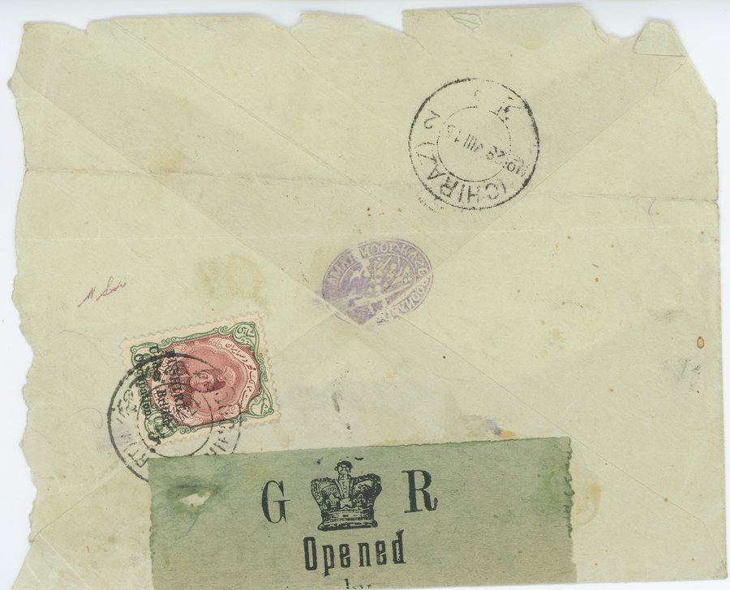
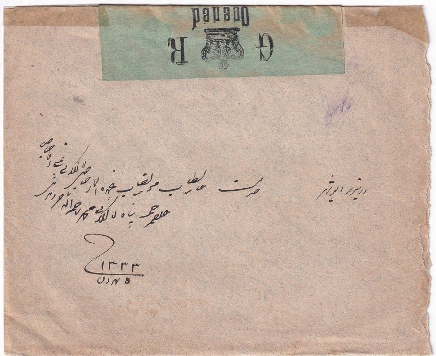

Skip to content
Persian Postal History
تاریخ پستی ایران
Home
Education
Rates
Censors
Forgeries
Collection
Resources
Censors
/
British forces, south
/
Preprinted censor label
Preprinted censor label
Applied by
British forces, south
Reads
British preprinted label used at Bushire
Seen
1915
Covers
2

Bushire to Shiraz
1915, item 40002

Shiraz to Bushire
Undated, item 40315
Previous mark: CP-103
Close